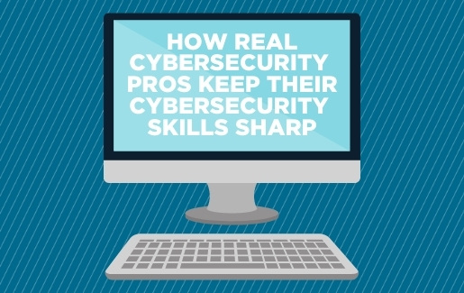

CyberSecure
Home
FAQs
About
Blog
Contact
Services Overview
Client Testimonials
Latest News
Training Programs
Resources
Resources
Access valuable resources and tools to enhance your cybersecurity knowledge and skills.

How Real Cybersecurity Pros Keep Their Cybersecurity Skills Sharp
20 Cybersecurity Skills to Boost (or Jumpstart) Your Career
What Skills Does a Cybersecurity Analyst Need?